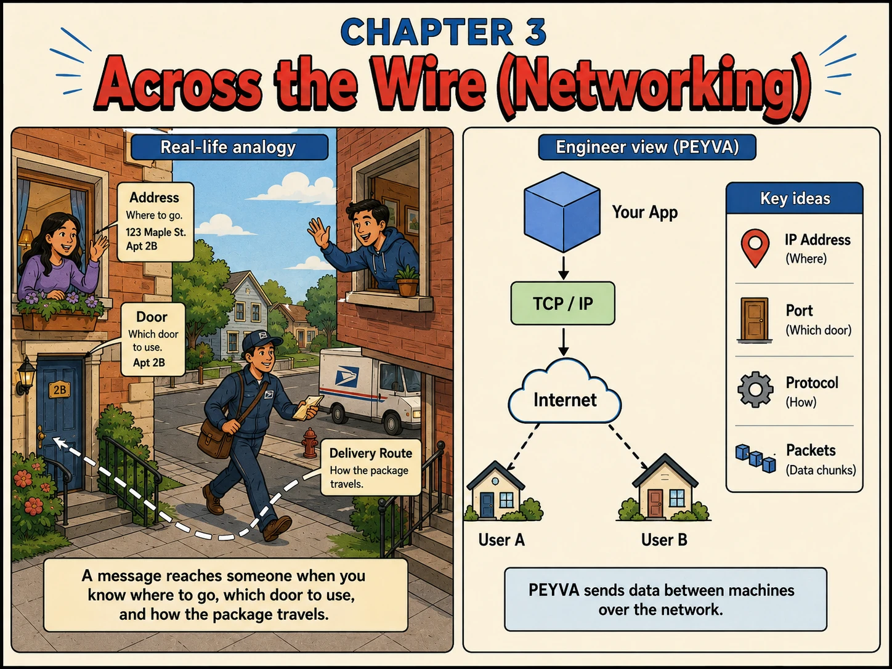

Chapter 3
Across the Wire (Networking)
A message reaches someone when you know where to go, which door to use, and how the package travels.

1. Why
- TCP is a stream of bytes, not a sequence of messages. One write on the sender can arrive as three reads on the receiver, or three writes as one read. Any protocol on top of it has to say where a message ends, with a length prefix, a delimiter, or a header like HTTP's Content-Length.
- Reading half a request is normal, not an error. Code that assumes one read returns one request works on localhost and breaks on a real network, which is the most common first bug in anything that speaks TCP directly.
- TCP promises order and retransmission while the connection lives. It does not promise delivery: a connection can drop after the sender's write returned and before the receiver read anything, and neither side is told which bytes made it.
- Underneath, everything travels as packets that can be lost, duplicated, delayed or reordered. TCP hides that from you on one connection; it cannot hide the connection itself failing.
- Reachability is layered: the process must bind to a routable address, the OS firewall must allow the port, and the network must route to the machine. A failure at any layer looks identical from the caller's side, a timeout.
- The moment a second machine can reach the process, latency stops being zero and failures stop being visible. This is the boundary where system design starts.
2. Concepts
- IP Address. Where a machine lives on the network, the equivalent of a street address.
- Protocol. The agreed-upon way of talking. peyva speaks TCP/IP, with HTTP on top of it later.
- Packets. Chunks the network moves data in. Any one can be lost, delayed, duplicated or arrive out of order; TCP repairs that within one connection.
- Stream. What TCP hands your program: bytes in order, with no marks saying where one message ends. Framing is the application's job.
- Framing. How a protocol marks message boundaries on a stream: a length prefix, a delimiter, or a header that says how many bytes follow.
3. Build It Hands-on Building in Go, change in Chapter 0
Written for Windows, in PowerShell, chosen in Growing the Team: Scale Out
Add context and motivation. Told where you are and why, it picks commands that run on your machine and warns you about the firewall prompt.
Documented in Anthropic: Prompting best practices, Add context to improve performance
Every prompt below is copied with these rules, about 683 tokens for the chapter
Build this in Go, standard library only.
Code in peyva/<component>/, one folder per component.
Money: exact decimal or integer minor units, never floating point, two decimal places.
The goal and invariants are in peyva/goal.md.
The Portal is plain HTML and CSS. No framework, no build step, no dependencies.
It lives in peyva/portal/. Anything it needs from the server is Go, standard library only.
One customer's wallet at a time, never everyone's at once. A switcher at the top says whose.
New work joins the menu.
The goal and invariants are in peyva/goal.md, the look in peyva/portal/design.md.
1 of 2 Build~442 tokens
My environment: Windows, in PowerShell. If you can run commands yourself, this machine is the one to run them on: act on it directly rather than assuming a separate machine you can only advise about. The Gateway is listening on TCP port 9310 on this machine, and I have a phone on the same Wi-Fi.
I want to reach the Gateway from the phone instead of from localhost. I'm doing this to understand how a service becomes reachable beyond the machine it runs on, so tell me what is actually happening rather than only what to type.
Tell me the command for my OS to find this machine's network address, and how to know which of the addresses it prints is the right one. Then tell me whether the Gateway needs a code change to accept connections from another machine, or whether it already does.
If a firewall prompt is likely on my OS, warn me before I hit it. If the phone can't reach it, ask me one thing, whether this is a locked-down network, and go straight to having me check from a second terminal on this machine against that address instead. Don't make me report back symptoms first.
Then show me that TCP is a stream: have the Gateway read what arrives and print each read with its byte count, and send it one message from a client in two separate writes with a pause between them. Tell me what the Gateway would need in order to know where that message ended.
Done when the phone (or that second terminal, if the network blocks it) reaches the Gateway, the Gateway logs the connection, and I have seen one message arrive as more than one read.
2 of 2 Portal~241 tokens
The Gateway accepts connections but serves nothing. Have it return peyva/portal/index.html to anything that connects, so the page I could only open locally is now reachable from my phone on the same Wi-Fi. Tell me what changes about how the page loads its stylesheet once it arrives over a connection instead of from disk, before I hit it. Leave the Gateway running once you've checked it works. The point is reaching it from my phone next, not just confirming it starts. Done when the phone (or a second terminal on this machine, if the network blocks the phone) shows alice's balance.
Quick tip: TCP gives you bytes in order, not messages. Where one request ends and the next begins is your job.